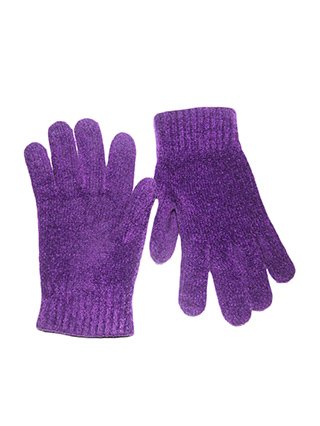
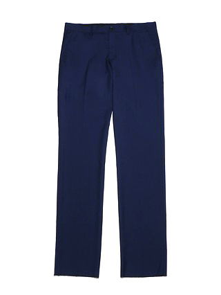
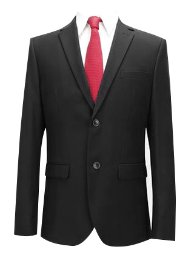
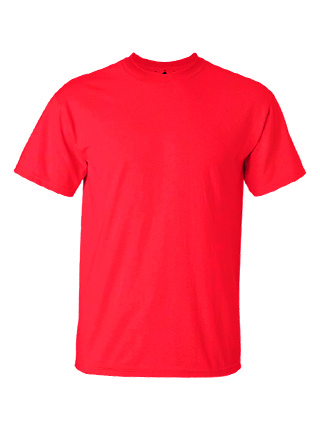
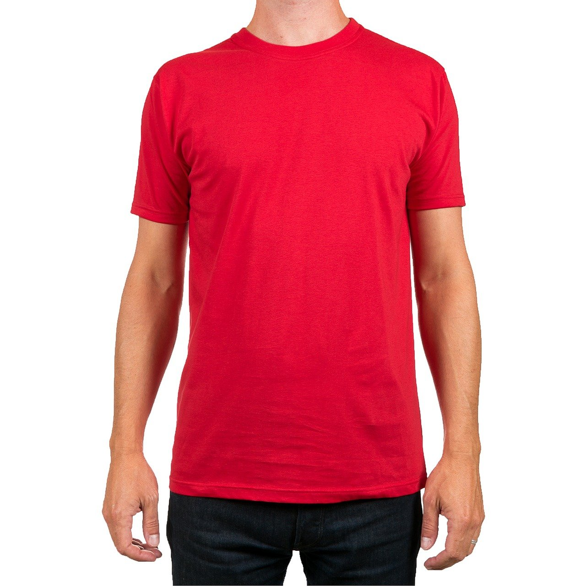
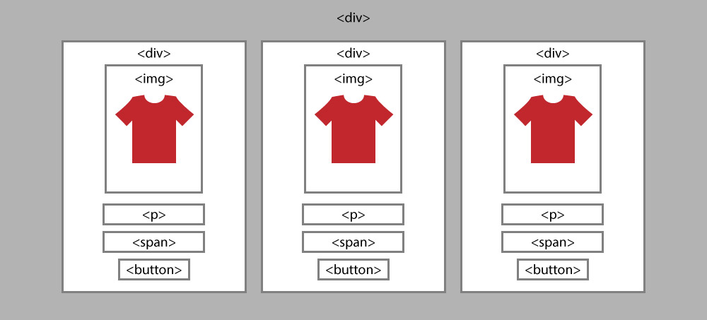
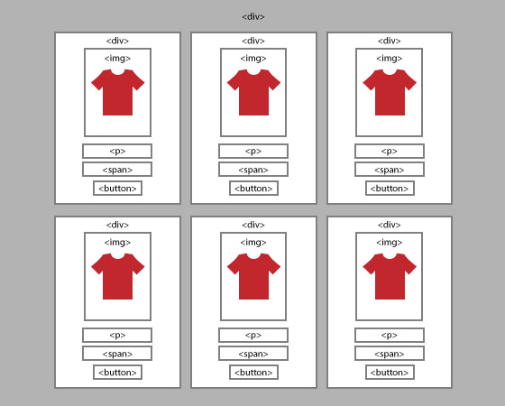
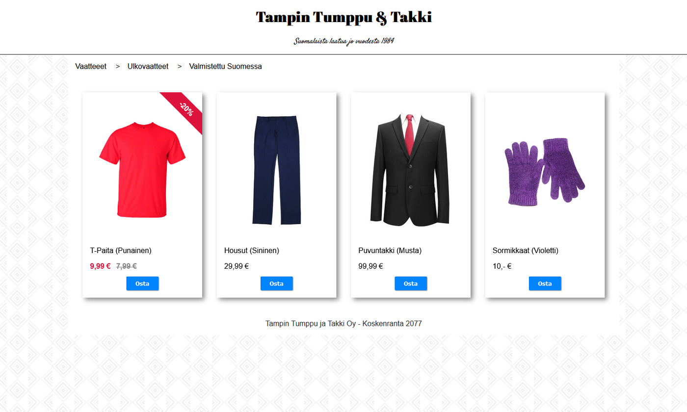
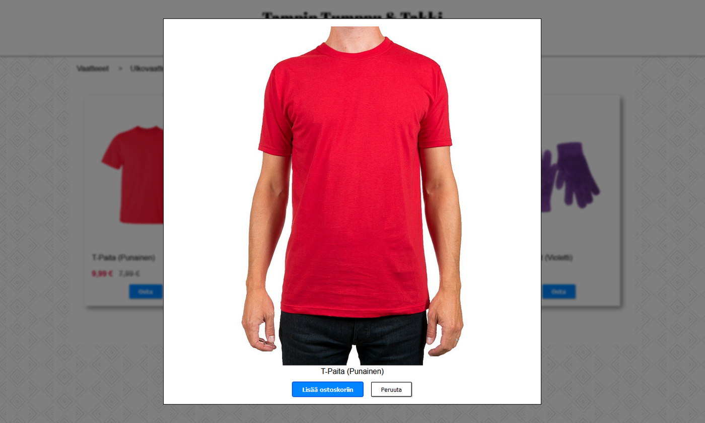

Demo 11 - Vaatekauppa
- Tee demos kansion sisälle d11-kansio
- Lisää luomaasi d11 kansioon index.html ja style.css -tiedostot sekä img kansio
- Lataa alla olevat vaatekuvat img-kansioon tai käytä netistä löytyviä ilmaisia tuotekuvia
- Huomioi, että kuvissa tulee olla valkoinen tausta (.jpg) tai niiden tulee olla syvättyjä (.png) läpinäkyvyys säilyttäen
- Kaupan nimi ja tuotteet eivät ole oleellisia, vaan se että käytät laajasti eri html-elementtejä
- Tarkista että git-kansiosi rakenne on seuraavanlainen:
html_css_basics
|
├── demos
│ ├── ...
│ └── d11
│ ├── index.html
│ ├── style.css
│ └── img
│ ├── kuva_1.jpg
│ └── kuva_2.jpg
|
├── exercises
│ ├── e1
│ └── ...
|





Teoria
- Kuvagalleria-demossa useita kuvia <img> paketoitiin yhden <div> elementein sisälle
- Ulommaisen divin tyyli CSS flex sai sen sisällä olevat kuvat asettumaan vierekkäin
- Kuvien tilalla voi myös olla monimutkaisempi elementtikokonaisuus:

- CSS grid toimii samaan tapaan, mutta pakottaa sekä vaaka, että pystyrivit pysymään linjassa
- Täten se sopii hyvin elementeille, jotka ovat keskenään samankokoisia

Tehtävä:
- Tee diviin kääritty elementti, joka sisältää tuotekuvan, kuvatekstin, hinnan ja ostonapin.
- Kopioi elementti useaan kertaan ja kokeile asemoida ne vierekkäin CSS grid,
flex
tai inline-block tyyleillä
Jos jää aikaa ja kiinnostaa
- Tee sivusta oikean verkkokaupan näköinen
- Lisää header, jossa on kaupan nimi ja slogan
- Etsi sopivat Google fontit ja importtaa ne css-tiedoston ensimmäisellä rivillä
- Täytä body pattern-tyylisellä css-taustakuvalla, joita voit selata esim toptal.com sivulla
- Kokeile CSS box-shadow tyyliä lisäämään heittovarjot tuotekorttien alle
- Käytä leivänmuru-valikossa css:before -selektoria, jolla lisäät > merkin muiden paitsi ensimmäisen linkin eteen

Eikä siinä vielä kaikki
- Lisää jokaisen tuotekortin alle <dialog> tagi, johon lisäät nk. lightboxissa näkyvän sisällön
<div class="shop-item">
<img src="" alt="">
<p>Item</p>
<span>€€€</span>
<button>Osta</button>
</div>
<dialog>
<figure>
<img src="" alt="">
<figcaption>Item</figcaption>
<button class="close add">Lisää ostoskoriin</button>
<button class="close cancel">Peruuta</button>
</figure>
</dialog>
- Ota lightbox käyttöön lisäämällä popup.js ja popup.css
jolloin saat kuvan ponnautettua auki Osta-napista tai kuvaa kilkkamalla.
- Lightbox voi avata myös eri kuvatiedoston kuin esikatsekuva.

// JavaScript
// Source: Dialog Element | Loughlin McSweeney | CodePen
const setup_popup = () => {
// show spesific dialog on button click
const modals = document.querySelectorAll("dialog")
const buttons = document.querySelectorAll(".shop-item button");
const images = document.querySelectorAll(".shop-item img");
buttons.forEach( (btn, index) => {
btn.addEventListener("click", () => {
modals[index].showModal();
document.querySelector('body').classList.add("blur")
});
images[index].addEventListener("click", () => {
modals[index].showModal();
document.querySelector('body').classList.add("blur")
});
})
// close dialogs (button click)
const closeBtns = document.querySelectorAll(".close");
closeBtns.forEach( (btn) => {
btn.addEventListener("click", () => {
document.querySelector('body').classList.remove("blur");
modals.forEach( (modal) => {modal.close();})
})
});
// close dialogs (background click)
const dialogs = document.querySelectorAll("dialog");
dialogs.forEach( (dia) => {
dia.addEventListener("click", ( event ) => {
if (event.target === dia) {
modals.forEach( (modal) => {modal.close();})
document.querySelector('body').classList.remove("blur");
}
});
})
}
/* CSS: popup dialog styles */
/* Source: Dialog Element | Loughlin McSweeney | CodePen */
dialog .cancel:hover{
cursor: pointer;
background-color: rgb(207, 207, 207);
}
dialog figure{
text-align: center;
}
dialog figure img{
max-height: 80vh;
}
dialog::backdrop {
background: black;
opacity: 0.5;
}
dialog {
max-width: 90vw;
border: 1px solid black;
box-sizing: border-box;
padding: 0;
}
.blur{
filter: blur(2px);
}
dialog div{
display: block;
padding: 1em;
}